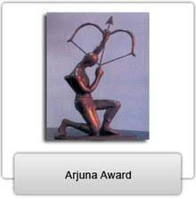

The Arjuna Awards were instituted in 1961 by the government of India to recognize outstanding achievement in National sports. The award carries a cash prize of Rs. 500,000, a bronze statuette of Arjuna and a scroll. Over the years the scope of the award has been expanded and a large number of sportspersons who belonged to the pre-Arjun Award era were also included in the list. Further, the number of disciplines for which the award is given was increased to include indigenous games and the physically handicapped category. The Government has recently revised the scheme for the Arjun Award. As per the revised guidelines, to be eligible for the Award, a sportsperson should not only have had good performance consistently for the previous three years at the international level with excellence for the year for which the Award is recommended, but should also have shown qualities of leadership, sportsmanship and a sense of discipline. From the year 2001, the award is given only in disciplines falling under the following categories: (i) Olympic Games / Asian Games / Commonwealth Games / World Cup / World Championship Disciplines and Cricket (ii) Indigenous Games (iii) Sports for the Physically Challenged

| Year | Recipient | Award | Gender |
|---|---|---|---|
| 1961 | Nandu M. Natekar | Arjuna Award | Male |
| 1962 | Meena Shah | Arjuna Award | Female |
| 1965 | Dinesh Khanna | Arjuna Award | Male |
| 1967 | Suresh Goel | Arjuna Award | Male |
| 1969 | Dipu Ghosh | Arjuna Award | Male |
| 1970 | Damayanti Tambay | Arjuna Award | Female |
| 1971 | Sobha Morthy | Arjuna Award | Female |
| 1972 | Prakash Padukone | Arjuna Award | Male |
| 1974 | Raman Ghosh | Arjuna Award | Male |
| 1975 | Devinder Ahuja | Arjuna Award | Male |
| 1976 | Ami Ghia | Arjuna Award | Female |
| 1977–1978 | Kanwal Thakar Singh | Arjuna Award | Female |
| 1980–1981 | Syed Modi | Arjuna Award | Male |
| 1982 | Madhumita Bisht | Arjuna Award | Female |
| 1982 | Partho Ganguli | Arjuna Award | Male |
| 1999 | Pullela Gopichand | Arjuna Award | Male |
| 2000 | George Thomas | Arjuna Award | Male |
| 2004 | Abhinn Shyam Gupta | Arjuna Award | Male |
| 2005 | Aparna Popat | Arjuna Award | Female |
| 2006 | Chetan Anand | Arjuna Award | Male |
| 2007 | Anup Sridhar | Arjuna Award | Male |
| 2009 | Saina Nehwal | Arjuna Award | Female |
| 2011 | Jwala Gutta | Arjuna Award | Female |
| 2012 | Parupalli Kashyap | Arjuna Award | Male |
| 2012 | Ashwini Ponnappa | Arjuna Award | Female |
| 2013 | P. V. Sindhu | Arjuna Award | Female |
| 2014 | Valiyaveetil Diju | Arjuna Award | Male |
| 2015 | Srikanth Kidambi | Arjuna Award | Male |
| 2018 | N. Sikki Reddy | Arjuna Award | Female |
| 2019 | B. Sai Praneeth | Arjuna Award | Male |
| 2020 | Satwiksairaj Rankireddy | Arjuna Award | Male |
| 2020 | Chirag Shetty | Arjuna Award | Male |
| 2022 | Lakshya Sen | Arjuna Award | Male |
| 2022 | Prannoy H. S. | Arjuna Award | Male |